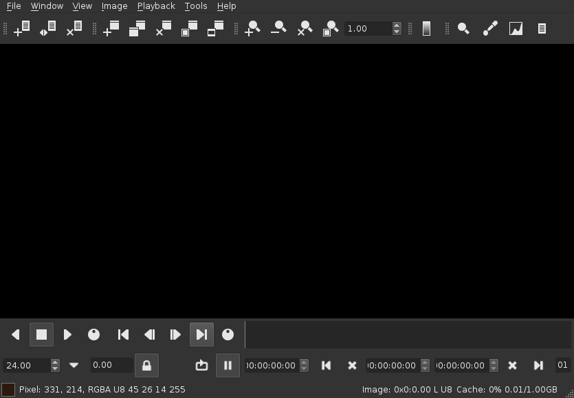

djv_view
An application for real-time image sequence and movie playback.

Files
File Formats
For the list of supported file formats see the supported image formats page.
File Sequences
TODO
Opening Files
TODO
Saving Files
TODO
File Layers
TODO
Proxy Scaling
Proxy scaling reduces the resolution when loading files to allow more images to be stored in the memory cache at the expense of image quality. Proxy scaling can also improve playback speed since the images are smaller.
The proxy scale may be set from the file menu or file preferences.
8-Bit Conversion
This option converts images to 8-bits when loading files to allow more images to be stored in the memory cache at the expense of image quality.
8-bit conversion may be set from the file menu or file preferences.
Memory Cache
The memory cache allows the application to store images in memory which can improve playback performance. When the memory cache is disabled the images are streamed directly from disk.
The memory cache may be enabled or disabled from the file menu or file preferences. The size of the cache is set in the file preferences. The size should be set large enough to hold your image sequences and smaller than the amount of memory in your computer.
The cached images are shown in the playback bar and the state of the memory cache is shown in the information bar.
File Menu
| Menu Item | Description | Keyboard Shortcut |
|---|---|---|
| Open | Open a new file | Ctrl+O |
| Recent | List of recently opened files | |
| Reload | Reload the current file | Ctrl+R |
| Reload Frame | Reload the current frame | Ctrl+Shift+R |
| Close | Close the current file | Ctrl+W |
| Save | Save a copy of the current file | Ctrl+S |
| Save Frame | Save a copy of the current frame | Shift+Ctrl+S |
| Layer | A list of the layers in the current file | |
| Layer Previous | Go to the previous layer | Ctrl+- |
| Layer Next | Go to the next layer | Ctrl+= |
| Proxy Scale | Set the proxy scale | |
| 8-bit Conversion | Enable 8-bit conversion | |
| Memory Cache | Enable the memory cache | |
| Preload Cache | Enable the memory cache pre-load | |
| Clear Memory Cache | Clear the contents of the memory cache | |
| Messages | Show the message dialog | |
| Preferences | Show the preferences dialog | |
| Exit | Exit the application | Ctrl+Q |
Windows
Opening and Closing Windows
TODO
Resizing Windows
TODO
Full Screen Mode
TODO
Window Controls
TODO
Window Menu
| Menu Item | Description | Keyboard Shortcut |
|---|---|---|
| New | Create a new window | Ctrl+N |
| Copy | Copy the current window | Ctrl+C |
| Close | Close the current window | Ctrl+E |
| Fit | Resize the window to fit the image | F |
| Full Screen | Show the window full screen | U |
| Show Controls | Set whether the tool bars, playback bar, and information bar are visible | C |
| Show Tool Bars | Set whether the tool bars are visible | |
| Show Playback Bar | Set whether the playback bar is visible | |
| Show Information Bar | Set whether the information bar is visible |
Views
View Navigation
TODO
Grid
TODO
Heads Up Display (HUD)
TODO
View Menu
| Menu Item | Description | Keyboard Shortcut | |
|---|---|---|---|
| Left | Pan the view left | Left Arrow | |
| Right | Pan the view right | Right Arrow | |
| Up | Pan the view up | Up Arrow | |
| Down | Pan the view down | Down Arrow | |
| Center | Center the view | Insert | |
| Zoom In | Zoom into the view | = | |
| Zoom Out | Zoom out of the view | - | |
| Zoom Reset | Rest the zoom | 0 | |
| Reset | Reset the position and zoom | Delete | |
| Fit | Fit the image to the view | Backspace | |
| Grid | Set the grid overlay | ||
| HUD | Toggle the HUD (Heads Up Display) | H |
Images
Frame Store
TODO
Image Transforms
TODO
Color and Display Profiles
TODO
Image Channels
TODO
Image Menu
| Menu Item | Description | Keyboard Shortcut |
|---|---|---|
| Show Frame Store | Show the currently loaded frame store | E |
| Load Frame Store | Load the current image into the frame store | Shift+E |
| Mirror Horizontal | Mirror the image horizontally | F1 |
| Mirror Vertical | Mirror the image vertically | F2 |
| Scale | Set the image scale | |
| Rotate | Set the image rotation | |
| Color Profile | Set whether the image color profile is enabled | |
| Show Display Profile | Show the image display profile settings | |
| Display Profile | Set the current image display profile | |
| Channel | Set which image channels are visible |
Playback
Playback Controls
TODO
Frame Controls
TODO
In and Out Points
TODO
Playback Speed
TODO
Playback Layout
TODO
Frames and Timecode
TODO
Playback Menu
| Menu Item | Description | Keyboard Shortcut |
|---|---|---|
| Reverse | Start reverse playback | J |
| Stop | Stop playback | K |
| Forward | Start forward playback | L |
| Toggle Playback | Toggle playback | Space |
| Loop | Set the playback loop mode | |
| Every Frame | Set whether every frame is played back | |
| Start | Go to the start frame or in point | Home |
| Start Absolute | Go to the start frame | Shift+Home |
| Previous | Go to the previous frame | [ |
| Previous X10 | Go backwards 10 frames | { |
| Previous X100 | Go backwards 100 frames | Ctrl+{ |
| Next | Go to the next frame | ] |
| Next X10 | Go forward 10 frames | } |
| Next X100 | Go forward 100 frames | Ctrl+} |
| End | Go to the end frame or out point | End |
| End Absolute | Go to the end frame | Shift+End |
| Enable In/Out Points | Set whether in/out points are enabled | P |
| Mark In Point | Set the current frame as the in point | I |
| Mark Out Point | Set the current frame as the out point | O |
| Reset In Point | Reset the in point | Shift+I |
| Reset Out Point | Reset the out point | Shift+O |
| Layout | Set the playback bar layout |
Tools
Magnify
This tool provides image magnification.

Color Picker
This tool provides color picking.

Histogram
This tool provides an image histogram.

Information
This tool provides image information.

Tools Menu
| Menu Item | Description | Keyboard Shortcut |
|---|---|---|
| Magnify | Toggle the magnify tool | 1 |
| Color Picker | Toggle the color picker tool | 2 |
| Histogram | Toggle the histogram tool | 3 |
| Information | Toggle the information tool | 4 |
Command Line
Usage:
djv_view [image]... [option]...
| image | One or more images, image sequences, or movies |
| option | Additional options (see below) |
Options:
| -combine | Combine multiple command line arguments into a single sequence. |
| -seq, -q (value) | Set command line file sequencing. Options = Off, Sparse, Range. Default = Range. |
| -auto_seq (value) | Automatically detect sequences when opening files. Options = False, True. Default = True. |
File options:
| -file_layer (value) | Set the input layer. Default = 0. |
| -file_proxy (value) | Set the proxy scale. Options = None, 1/2, 1/4, 1/8. |
| -file_cache (value) | Set whether the file cache is enabled. Options = False, True. |
Window options:
| -window_full_screen | Set the window full screen. |
Playback options:
| -playback (value) | Set the playback. Options = Reverse, Stop, Forward. |
| -playback_frame (value) | Set the playback frame. |
| -playback_speed (value) | Set the playback speed. Options = 1, 3, 6, 12, 15, 16, 18, 23.976, 24, 25, 29.97, 30, 50, 59.94, 60, 120. |
Image format command line options can be found on the supported image formats page.